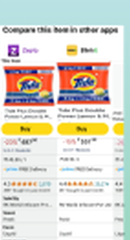
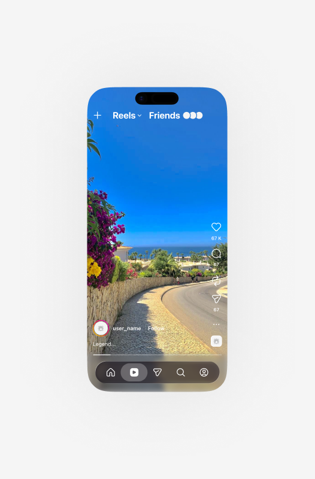
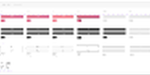
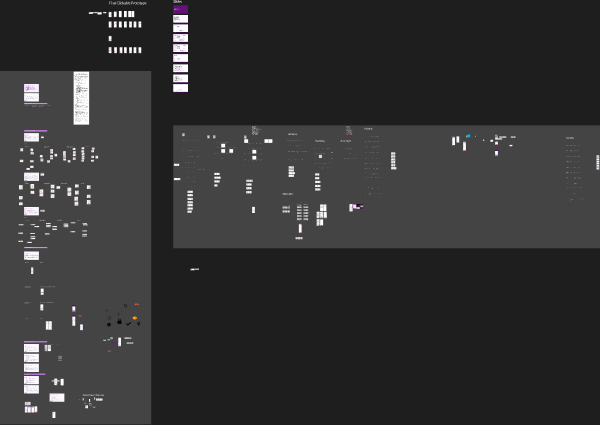

Selected Work
Designing across fintech, social, and commerce.

Flow — Fintech App
End-to-end fintech mobile UI: balance dashboard, spending trends, budget setup, and goal tracking. Concept direction generated with Google Stitch, refined with Claude to produce developer-ready screens.

Instagram Watch History — Case Study
Designed a Watch History feature within Instagram's existing design system — zero new patterns introduced. Full case study: discovery, user flow mapping, wireframes, and hi-fi screens with filter and grid views.

GroceryBuddy — Price Comparison App
Cross-platform grocery price comparison: from full design thinking canvas — user flows, research, IA, wireframes — to polished high-fidelity screens. Reduced cognitive load at the point of buying decision.
View in Figma →
Instagram — Dark Mode Redesign
Reimagining Instagram's dark-mode experience across Reels, Stories, and messaging. Screens generated and iterated using Figma AI agents — a direct example of AI-augmented design workflow on a real-world product.
View in Figma →
Airbnb — UX Study
Hypothesis-driven UX exploration of Airbnb's booking flow. Covers assumption mapping, UI iteration sprints, and asset organisation — the full messy-middle of collaborative UX research made visible.

Zepto — Interaction Design
Interaction flows for Zepto's quick-commerce checkout experience. Focused on reducing friction in time-sensitive purchase journeys and mapping microinteractions across the checkout funnel.
View in Figma →